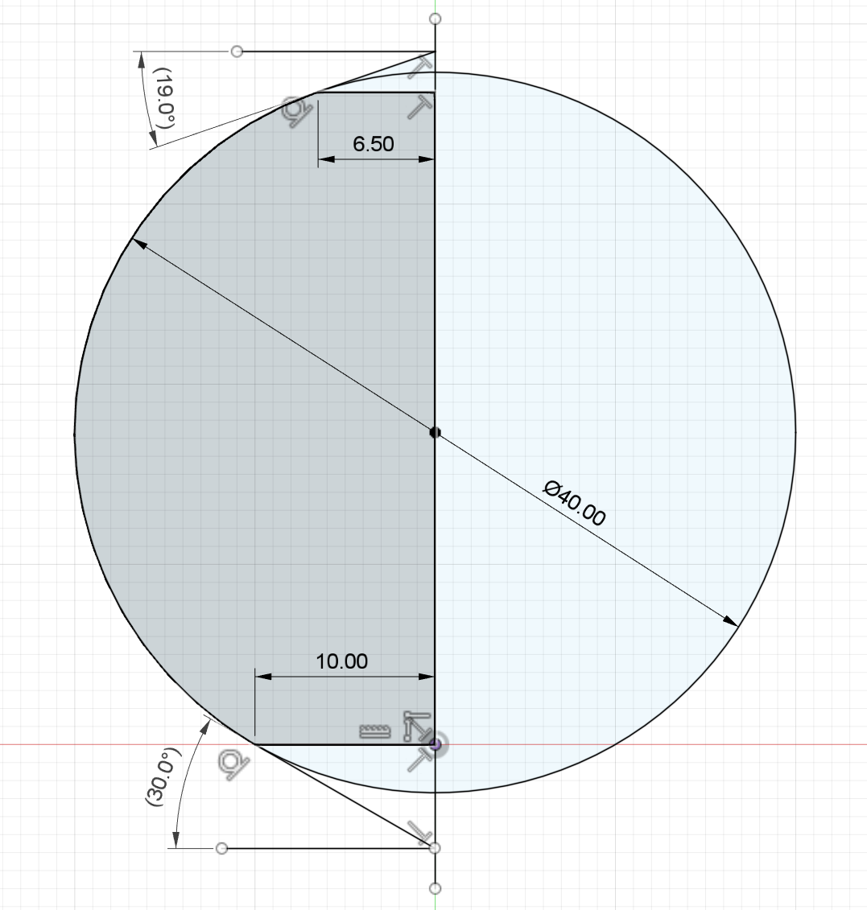
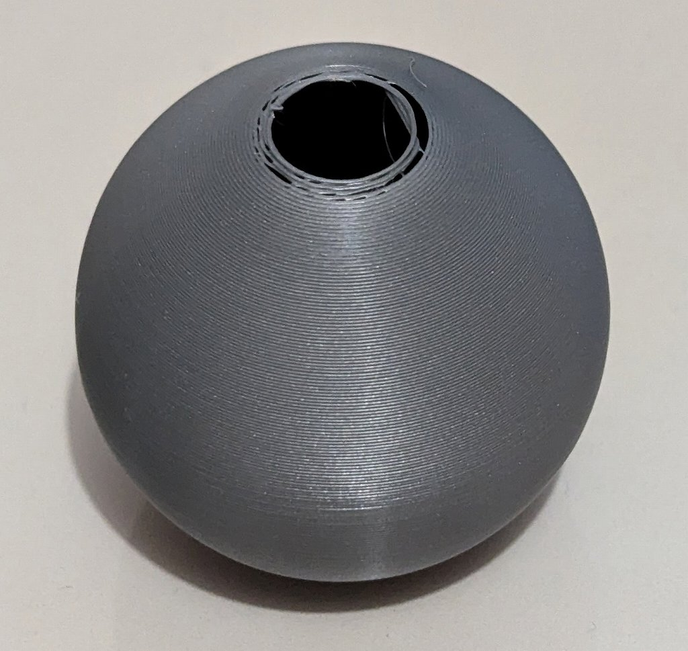
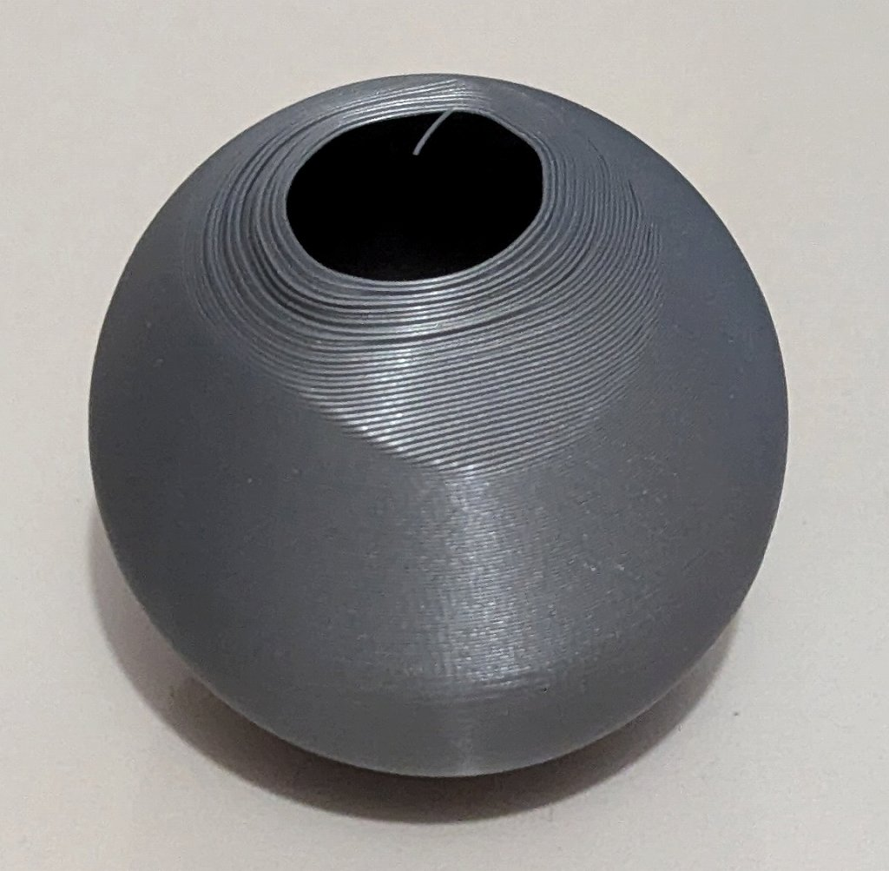

花瓶モード条件出し
概要
Simplify3D v5.1.2 の vase mode (花瓶モード)を使用して綺麗に印刷できる形状を確認したのでその記録。
はじめに
FDM 方式の 3D プリンタは一層毎に印刷を重ねていくためシームと呼ばれる跡ができてしまいます。このシームを無くすことができる花瓶モードというものが存在するのですが、花瓶モードではサポートが使用できません。そこで花瓶モードでは、どの程度のオーバーハング形状まで印刷できるのか試してみました。
テスト内容
φ40㎜ の球体の上部分と下部分を削りながら綺麗に印刷できる範囲を探ってみました。
結果
上部・下部のオーバーハングはそれぞれ19°・30°まで印刷できました。ただし最終レイヤー（最上部）は、上の層から押されないため、わずかに厚みが出ます。断面形状（回転体）は以下のとおり。

印刷条件
- ELEGOO PLA スペースグレー (not PLA+)
- Nozzle 0.4mm
- Layer Height 0.3mm
- Solid Bottom Layers 3
- Adaptive Layer Heights 有効
- ラフト あり
- 基準速度 2000mm/min
なお底面はラフトから剥がす際に分離します（ラフトにもっていかれる）
失敗例(上部)

上部のオーバーハングがきつい場合に発生
失敗例(下部)

下部のオーバーハングがきつい、印刷速度が速い、ラフトがない・底面が弱い場合に発生